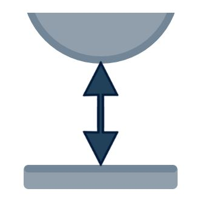
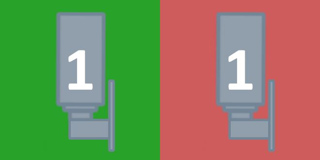

Dieses Bedienfeld ermöglicht dem Bediener die Verwaltung der Scheiben der Maschine.

Parameter
Die Parameter des ausgewählten Scheibensatzes werden in diesem Bereich angezeigt.
Links befinden sich die allgemeinen Parameter des Scheibensatzes, rechts die spezifischen Parameter für die Scheibe, die jedem Trennkopf zugeordnet ist.
Bei Maschinen SX5 oder SX6 werden im rechten Bereich entsprechend 5 bzw. 6 Scheiben angezeigt.

Allgemeine Parameter des Scheibensatzes
Aufgelistet werden die Parameter des linken Bereichs, die sich auf den ausgewählten Scheibensatz beziehen.
 | Name |
 | Radius |
 | Scheibendicke |
 | RPM |
 | Freifahrposition |
Außerdem sind folgende Schaltflächen vorhanden:
 | Stärke neu berechnen |
 | RPM-Informationen |
Parameter der einzelnen Scheibe
Jedes dieser Elemente zeigt die Parameter der Scheibe, die am jeweiligen Trennkopf montiert ist.

Für jede Scheibe können Radius und Stärke eingestellt werden. Der Bediener kann über die danebenliegende Schaltfläche festlegen, ob die Scheibe aktiviert werden soll.
 | Scheibe aktivieren/deaktivieren |
Schaltflächen
 | Scheibe antasten |
 | Kompensation |
 | Vollständige Daten |
Vollständige Daten
In diesem Fenster kann der Bediener alle Daten des in der Maschine montierten Scheibensatzes ändern.
Insbesondere können Radius, Zahnstärke und Kernstärke jeder Scheibe eingestellt werden.

Insbesondere:
 | Scheibendicke |
 | Kernstärke |